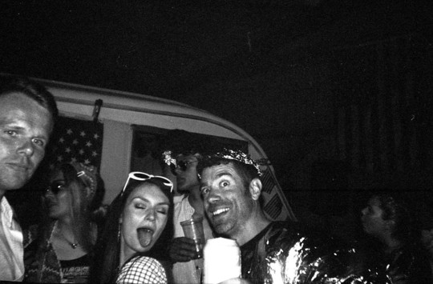
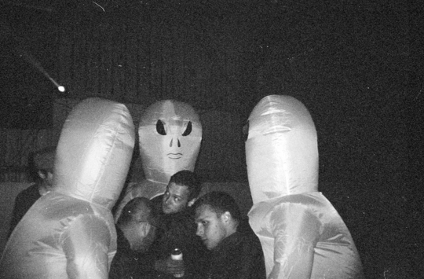

As an example, we organized a “Space Race” themed party (remember the rocket). Very little photography exists unfortunately as pre 1969 technology, including phones and digital cameras, was prohibited as part of the theme. We did manage to get a short video...
Yes - that is one of our staff DJing on the roof of a vintage tractor.
The pictures below also emerged.
For our support in the complete transformation of a barn, a controlled light show, all the effects, smoke and props, two DJ’s and stacks of theming, the organizers paid us under £1500.

